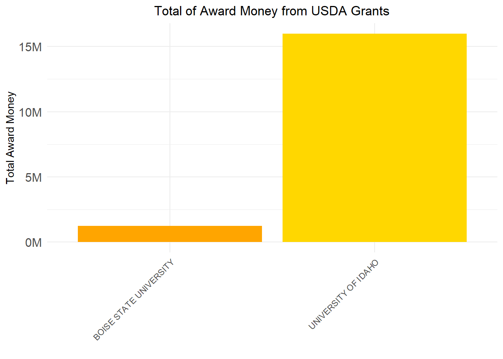

Write a summary of the data sources you have used. Include a Data Dictionary table that fully describes each individual data source used. You may supplement the data supplied to you with additional sources if you like, but this is not required.
Summary of Data Sources
DOE Awards Data (DOEawards.xlsx): This dataset contains information about awards provided by the Department of Energy (DOE).
USDA to UI Awards Data (USDAtoUI.csv): This dataset includes awards data related to the University of Idaho (UI) received from the U.S. Department of Agriculture (USDA).
NSF UI Awards Data (NSFUI_2.xlsx): This dataset consists of awards data from the National Science Foundation (NSF) received by the University of Idaho (UI).
NIH UI Awards Data (NIHUI_2.xlsx): This dataset contains information about awards received by the University of Idaho (UI) from the National Institutes of Health (NIH).
library(dplyr)# Assuming 'Date' is the column containing the grant date informationstart_date <-as.Date("2021-01-01")end_date <-as.Date("2024-03-15")UIgrants_recent_grantsUSDA <- USDAUI %>%filter(Award.Date >= start_date & Award.Date <= end_date) %>%arrange(desc(Award.Date))
Identifying phage-bacteria interactions using a multispecies model
NIGMS
8/17/2023
PAR-19-312
5P20GM104420-09
3/15/2015
6/30/2025
7/1/2023
6/30/2024
NA
152932
NA
106362
46570
NA
Sequence-structure-function relationships in human visual photopigments
NIGMS
8/17/2023
PAR-19-312
5P20GM104420-09
3/15/2015
6/30/2025
7/1/2023
6/30/2024
NA
156572
NA
109348
47224
NA
Idaho INBRE Administrative Core
NIGMS
5/8/2023
PA-20-272
3P20GM103408-23S1
9/30/2001
4/30/2024
5/1/2023
4/30/2024
NA
190515
NA
165515
25000
NA
National Science Foundation (NSF)
Code
library(readxl)library(dplyr)library(tidyverse)library(knitr) # Ensure knitr is explicitly loaded for kable()# Reading the dataset from an Excel fileNSFUIAwardsActive <-read_xlsx("NSFUI_2.xlsx")# Selecting specific columns, ensure there are no leading or trailing spaces in column namesNSFUI_New_Awards_Specific <- NSFUIAwardsActive %>%select(Title, NSFOrganization, StartDate, LastAmendmentDate, EndDate, AwardedAmountToDate)# Displaying the first few rows in a table formatknitr::kable(head(NSFUI_New_Awards_Specific))
Title
NSFOrganization
StartDate
LastAmendmentDate
EndDate
AwardedAmountToDate
RII Track-1: Idaho Community-engaged Resilience for Energy-Water Systems (I-CREWS)
OIA
08/01/2023
09/11/2023
07/31/2028
$2,099,031.00
RII Track-1: Linking Genome to Phenome to Predict Adaptive Responses of Organisms to Changing Landscapes
OIA
10/01/2018
09/07/2022
03/31/2024
$20,000,000.00
RII Track-2 FEC: Developing a Circular Bio-Based Framework For Architecture, Engineering and Construction Through Additive Manufacturing
OIA
10/01/2021
08/23/2023
09/30/2025
$2,999,475.00
Phase III IUCRC at University of Idaho: Center for Advanced Forestry Systems
EEC
12/15/2019
03/11/2024
11/30/2024
$693,814.00
Conference: NSF EPSCoR Workshop: Intelligent Manufacturing for Extreme Environments
OIA
09/01/2023
08/17/2023
08/31/2024
$99,445.00
Collaborative Research: As above so below: Quantifying the role of simultaneous LLSVPs and continents on Earth’s cooling history using numerical simulations of mantle convection
EAR
07/01/2023
06/08/2023
06/30/2026
$120,952.00
QUESTION 1
Provide a visualization that shows our active awards from each sponsor. I need to see their start date and end date, the amount of the award, and the name of the Principal Investigator. I’m really interested in seeing how far into the future our current portfolio will exist. Are there a bunch of awards about to expire? Are there a bunch that just got funded and will be active for a while? Does this vary across sponsors?
Code
library(readxl)library(dplyr)library(ggplot2)Q1_Data <-read_xlsx("Q1_Compilled_Data.xlsx")# Convert StartDate and EndDate to Date objectsQ1_Data$StartDate <-as.Date(Q1_Data$StartDate, format ="%m/%d/%Y")Q1_Data$EndDate <-as.Date(Q1_Data$EndDate, format ="%m/%d/%Y")# Filter out rows with NA values in StartDate or EndDateQ1_Data <- Q1_Data[complete.cases(Q1_Data$StartDate, Q1_Data$EndDate), ]# Create the Gantt chart# Create the Gantt chartggplot(Q1_Data, aes(y = Sponsor, x = StartDate, xend = EndDate, yend = Sponsor)) +geom_segment(size =10, color ="black") +# Use linewidth instead of sizescale_x_date(date_breaks ="1 year", date_labels ="%Y", limits =c(as.Date("2021-01-01"), as.Date("2029-01-01"))) +labs(title ="Active Awards Timeline",x ="Timeline",y ="Sponsor") +theme_minimal() +theme(legend.position ="bottom")
Warning: Using `size` aesthetic for lines was deprecated in ggplot2 3.4.0.
ℹ Please use `linewidth` instead.
library(readxl)library(dplyr)library(ggplot2)Q1_Data <-read_xlsx("Q1_Compilled_Data.xlsx")# Convert StartDate and EndDate to Date objectsQ1_Data$StartDate <-as.Date(Q1_Data$StartDate, format ="%m/%d/%Y")Q1_Data$EndDate <-as.Date(Q1_Data$EndDate, format ="%m/%d/%Y")# Filter out rows with NA values in StartDate or EndDateQ1_Data <- Q1_Data[complete.cases(Q1_Data$StartDate, Q1_Data$EndDate), ]ggplot(Q1_Data, aes(y = Sponsor, x = StartDate, xend = EndDate, color = Sponsor)) +geom_segment(aes(yend = Sponsor), size =6) +# Specify yend aestheticgeom_text(aes(x = StartDate, y = Sponsor, label = PI), vjust =-0.5, size =3) +scale_x_date(date_breaks ="1 year", date_labels ="%Y") +labs(title ="Active Awards Timeline",x ="Timeline",y ="Sponsor",color ="Sponsor") +theme_minimal() +theme(legend.position ="bottom")
QUESTION 2
What is the proportional representation of new awards to the UI from these various sources over the past 5 to 10 years? Are there any trends that are encouraging or discouraging?
Code
#DOElibrary(readxl)library(dplyr)library(lubridate)# Read the Excel fileDOEawardsUI_Dates <-read_xlsx("DOEawards.xlsx")
New names:
• `` -> `...27`
Code
filtered_data_UI_DOE <- DOEawardsUI_Dates %>%filter(Institution =='Regents of the University of Idaho')#USDAUSDAawardsUI_Dates <-read.csv("USDAtoUI.csv")# Assuming the start date column is named "Start_Date"five_years_ago <-Sys.Date() -years(5) # Calculate the date 5 years ago# Filter the data to include only awards that started 5 years ago or laterfiltered_data_UI_5y_USDA <- USDAawardsUI_Dates %>%filter(Award.Date >= five_years_ago)# Assuming the start date column is named "Start_Date"ten_years_ago <-Sys.Date() -years(10) # Calculate the date 5 years ago# Filter the data to include only awards that started 5 years ago or laterfiltered_data_UI_10y_USDA <- USDAawardsUI_Dates %>%filter(Award.Date >= ten_years_ago)#NSFNSFawardsUI_Dates_5 <-read_xls("5YR_UI_NSF.xls")# Assuming the start date column is named "Start_Date"five_years_ago <-Sys.Date() -years(5) # Calculate the date 5 years ago# Filter the data to include only awards that started 5 years ago or laterfiltered_data_UI_5y_NSF <- NSFawardsUI_Dates_5 %>%filter(StartDate >= five_years_ago)NSFawardsUI_Dates_10 <-read_xls("10YR_UI_NSF.xls")# Assuming the start date column is named "Start_Date"ten_years_ago <-Sys.Date() -years(10) # Calculate the date 5 years ago# Filter the data to include only awards that started 5 years ago or laterfiltered_data_UI_10y_NSF <- NSFawardsUI_Dates_10 %>%filter(StartDate >= ten_years_ago)#NIHNIHawardsUI_Dates <-read_xlsx("10YR_UI_NIH.xlsx")#Assuming the start date column is named "Start_Date"five_years_ago <-Sys.Date() -years(5) # Calculate the date 5 years ago# Filter the data to include only awards that started 5 years ago or laterfiltered_data_UI_5y_NIH <- NIHawardsUI_Dates %>%filter(`Budget Start Date`>= five_years_ago)
QUESTION 3
How is UI performing with these sponsors when compared to the following peer institutions?
Center of Biomedical Research Excellence in Matrix Biology Phase II
NIGMS
8/24/2023
PA-20-272
3P20GM109095-10S1
8/1/2014
5/31/2024
6/1/2023
5/31/2024
723429
NA
NIGMS
517798
205631
723429
Role of LINC-mediated Mechanosignaling in MSC Aging
NIA
1/29/2024
PA-16-442
5R01AG059923-05
3/1/2020
1/31/2025
2/1/2024
1/31/2025
252208
NA
NIA
184500
67708
252208
Equipment for Spatiotemporal Dynamics of the Genome by 3D Orbital Tracking
NIGMS
5/23/2023
PA-20-272
3R15GM123446-02A1S1
5/17/2017
7/31/2025
8/1/2022
7/31/2025
97574
NA
NIGMS
97574
0
97574
Chemical probes to modulate acyl-homoserine lactone quorum signal synthesis
NIGMS
6/26/2023
PA-20-272
3R15GM148920-01S1
9/20/2022
8/31/2025
9/20/2022
8/31/2025
94718
NA
NIGMS
94718
0
94718
Chemical tools to investigate chain-flipping in quorum signal synthases
NIAID
2/14/2024
PA-20-195
5R21AI175749-02
1/23/2023
12/31/2025
1/1/2024
12/31/2024
12663
NA
NIAID
9013
3650
12663
National Science Foundation (NSF)
Code
library(readxl)library(dplyr)library(tidyverse)library(knitr) # Ensure knitr is explicitly loaded for kable()# Reading the dataset from an Excel fileNSFBSUAwardsActive <-read_xlsx("NSFBSU_2.xlsx")# Selecting specific columns, ensure there are no leading or trailing spaces in column namesNSFBSU_New_Awards_Specific <- NSFBSUAwardsActive %>%select(Title, NSFOrganization, StartDate, LastAmendmentDate, EndDate, AwardedAmountToDate)# Displaying the first few rows in a table formatknitr::kable(head(NSFBSU_New_Awards_Specific))
Title
NSFOrganization
StartDate
LastAmendmentDate
EndDate
AwardedAmountToDate
Planning: Track 1: Curriculum and Advancements in Recruitment, Education, and Engineering Retention (CAREER)
EEC
07/15/2022
07/14/2022
06/30/2024
$99,808.00
IUCRC Phase II Boise State University: Center for Atomically Thin Multifunctional Coatings (ATOMIC)
EEC
08/01/2021
11/14/2023
07/31/2026
$582,631.00
MRI: Acquisition of a 600 MHz NMR Console and Cryoprobe to Support Research and Education at Boise State University
DBI
10/01/2022
08/10/2023
09/30/2025
$769,221.00
MRI: Track 1: Acquisition of a Liquid Chromatography-High Resolution Mass Spectrometry System for Multidisciplinary Research and Training
CHE
09/01/2023
08/22/2023
08/31/2026
$710,000.00
ART: Translational Research Ambassadors Network for Strengthening Institutional Capacity and Fostering a Responsive and Open Mindset (TRANSFORM)
ITE
02/01/2024
09/08/2023
01/31/2028
$5,499,567.00
Lattice dynamics and phase transitions in multifunctional oxide nanomaterials studied by ultraviolet Raman spectroscop
The Brain-Behavior Relationship: Age, Hearing, and Their Effects on Understanding Speech in Noise
NIDCD
1/12/2023
PA-13-302
7R01DC015240-06
8/15/2016
7/31/2024
6/1/2022
7/31/2024
251216
NA
NIDCD
200394
50822
251216
MOLECULAR ANALYSIS OF MALARIA MITOCHONDRIAL GENE REGULATION
NIAID
12/18/2023
PAR-20-259
5DP2AI164244-03
1/1/2022
12/31/2026
1/1/2024
12/31/2024
364371
NA
NIAID
262096
102275
364371
Timely Response to In-Hospital Deterioration Through Design of Actionable Augmented Intelligence
NIGMS
6/20/2023
PA-19-056
5R01GM137083-04
7/15/2020
6/30/2024
7/1/2023
6/30/2024
397867
NA
NIGMS
356308
41559
397867
The role of metal ion homeostasis in regulating bacterial capsule production
NIAID
8/10/2022
PAR-18-714
1R15AI149725-01A1
8/10/2022
7/31/2025
8/10/2022
7/31/2025
408497
NA
NIGMS
235007
84993
320000
The role of metal ion homeostasis in regulating bacterial capsule production
NIAID
8/10/2022
PAR-18-714
1R15AI149725-01A1
8/10/2022
7/31/2025
8/10/2022
7/31/2025
408497
NA
NIAID
64992
23505
88497
Mechanisms of respiratory-related rhythmic motor activity and plasticity in the developing avian brain stem
NINDS
4/14/2020
PAR-18-714
2R15NS087521-02A1
9/30/2014
3/31/2024
4/15/2020
3/31/2024
358752
NA
NINDS
263720
95032
358752
National Science Foundation (NSF)
Code
library(readxl)library(dplyr)library(tidyverse)library(knitr) # Ensure knitr is explicitly loaded for kable()# Reading the dataset from an Excel fileNSFISUAwardsActive <-read_xlsx("NSFISU_2.xlsx")# Selecting specific columns, ensure there are no leading or trailing spaces in column namesNSFISU_New_Awards_Specific <- NSFISUAwardsActive %>%select(Title, NSFOrganization, StartDate, LastAmendmentDate, EndDate, AwardedAmountToDate)# Displaying the first few rows in a table formatknitr::kable(head(NSFISU_New_Awards_Specific))
Title
NSFOrganization
StartDate
LastAmendmentDate
EndDate
AwardedAmountToDate
CDS&E: Immersive Virtual Reality for Discovering Hidden Chemical Information and Improving Multivariate Modeling and Predication
CHE
09/15/2023
09/13/2023
08/31/2026
$449,994.00
GP-IN: Pathways to tribal geosciences careers through cultural connections to iconic landscapes
RISE
01/01/2022
08/16/2021
12/31/2024
$284,964.00
Supporting Transfer Student Success Using a Multidisciplinary Approach
DUE
10/01/2022
07/25/2022
09/30/2028
$1,499,956.00
Reynolds Creek Carbon Critical Zone Observatory
EAR
12/01/2013
07/24/2023
05/31/2024
$3,755,249.00
MRI: Acquisition of a FACSMelody Flow Cytometer and Cell Sorter
DBI
10/01/2022
09/07/2022
09/30/2025
$262,971.00
MRI: Acquisition of a Laser Ablation - Inductively Coupled Plasma - Triple Quadrupole - Mass Spectrometer (LA-ICP-QQQ-MS) System For Research and Education
BCS
08/15/2023
08/17/2023
07/31/2026
$744,396.00
Note that “performing” can mean a variety of different things. You must choose your metrics of performance and justify them.
USDA
Code
# COMPARISON BETWEEEN USDA - AWARD MONEYlibrary(readxl)USDA_Compare_Data <-read_xlsx("USDA_Combined_Data_Recent_Awards.xlsx")library(dplyr)library(ggplot2)library(dplyr)# Calculate total award money for each institutionUSDA_total_award_money <- USDA_Compare_Data %>%group_by(Grantee_Name) %>%summarise(USDA_total_award_money =sum(Award_Dollars))library(ggplot2)ggplot(USDA_total_award_money, aes(x = Grantee_Name, y = USDA_total_award_money)) +geom_bar(stat ="identity", fill ="blue") +ggtitle("Total of Award Money from USDA Grants") +xlab("") +ylab("Total Award Money") +theme_minimal() +theme(axis.text.x =element_text(angle =45, hjust =1),axis.text.y =element_text(size =12),plot.title =element_text(hjust =0.5)) +# Corrected position of plot titlescale_y_continuous(labels = scales::number_format(scale =1e-6, suffix ="M"))
DOE
Code
# COMPARISON BETWEEEN DOE - Grant Durationlibrary(readxl)DOE_Compare_Data <-read_xlsx("DOEawards_Combined_Data.xlsx")library(dplyr)# Assuming 'start_date' and 'end_date' are columns containing the start and end dates of the grants,# and 'institution' is a column indicating the institution for each grant# Filter the data for each institutionUI_data <- DOE_Compare_Data %>%filter(Institution =="Regents of the University of Idaho")BSU_data <- DOE_Compare_Data %>%filter(Institution =="Boise State University")ISU_data <- DOE_Compare_Data %>%filter(Institution =="Idaho State University")# Calculate the duration of grants for each institution# Convert "Start Date" and "End Date" columns to date objectsUI_data <- UI_data %>%mutate(`Start Date`=as.Date(`Start Date`, format ="%m/%d/%Y"),`End Date`=as.Date(`End Date`, format ="%m/%d/%Y"))# Assuming 'grant_duration' is in daysUI_data <- UI_data %>%mutate(grant_duration =`End Date`-`Start Date`)UI_data <- UI_data %>%mutate(grant_duration_years =as.numeric(grant_duration) /365.25)# BSUBSU_data <- BSU_data %>%mutate(`Start Date`=as.Date(`Start Date`, format ="%m/%d/%Y"),`End Date`=as.Date(`End Date`, format ="%m/%d/%Y"))# Assuming 'grant_duration' is in daysBSU_data <- BSU_data %>%mutate(grant_duration =`End Date`-`Start Date`)BSU_data <- BSU_data %>%mutate(grant_duration_years =as.numeric(grant_duration) /365.25)# ISUISU_data <- ISU_data %>%mutate(`Start Date`=as.Date(`Start Date`, format ="%m/%d/%Y"),`End Date`=as.Date(`End Date`, format ="%m/%d/%Y"))# Assuming 'grant_duration' is in daysISU_data <- ISU_data %>%mutate(grant_duration =`End Date`-`Start Date`)ISU_data <- ISU_data %>%mutate(grant_duration_years =as.numeric(grant_duration) /365.25)# Visualizationlibrary(dplyr)# Assuming UI_data contains the grant duration information for one institution# and other_datasets contain the grant duration information for the other institutions# Combine datasetscombined_data <-bind_rows(UI_data, BSU_data, ISU_data)# Colorsmy_colors <-c("Boise State University"="orange", "Idaho State University"="black", "Regents of the University of Idaho"="gold")# Plotting grant duration as a bar graph# Plotting grant duration as a bar graphlibrary(ggplot2)ggplot(combined_data, aes(x = Institution, y = grant_duration_years, fill = Institution)) +geom_bar(stat ="identity", position ="dodge") +ggtitle("Grant Duration by Institution") +xlab("") +ylab("Grant Duration (Years)") +scale_fill_manual(values = my_colors) +# Apply custom colorstheme_minimal() +theme(axis.text.x =element_text(angle =45, hjust =1, size =12), # Adjust size of x-axis labelsaxis.text.y =element_text(size =12), # Adjust size of y-axis labelslegend.text =element_text(size =12), # Adjust size of legend textplot.title =element_text(hjust =0.5, size =14)) # Adjust size of plot title
Code
# COMPARISON BETWEEEN DOE - AWARD MONEYlibrary(dplyr)library(ggplot2)# Calculate total award money for each institutionDOE_total_award_money <- DOE_Compare_Data %>%group_by(Institution) %>%summarise(DOE_total_award_money =sum(`Amount Awarded to Date`))# Colorsmy_colors <-c("Boise State University"="orange", "Idaho State University"="black", "Regents of the University of Idaho"="gold")library(ggplot2)ggplot(DOE_total_award_money, aes(x = Institution, y = DOE_total_award_money)) +geom_bar(stat ="identity", position ="dodge", fill = my_colors) +ggtitle("Total of Award Money from USDA Grants") +xlab("") +ylab("Total Award Money") +theme_minimal() +theme(axis.text.x =element_text(angle =45, hjust =1, size =12), # Adjust size of x-axis labelsaxis.text.y =element_text(size =12), # Adjust size of y-axis labelslegend.text =element_text(size =12), # Adjust size of legend textplot.title =element_text(hjust =0.5, size =14)) +# Adjust size of plot titlescale_y_continuous(labels = scales::number_format(scale =1e-6, suffix ="M"))

Code
# COMPARISON BETWEEEN DOE - Grant Statuslibrary(dplyr)library(ggplot2)# Calculate total grant action count for each institutionDOE_Grant_Action <- DOE_Compare_Data %>%group_by(Institution, `Action Type`) %>%summarise(count =n(), .groups ="drop") %>%ungroup()library(ggplot2)# Assuming DOE_Grant_Action is your summarized data frame with counts of Action Type by Institutionggplot(DOE_Grant_Action, aes(x = Institution, y = count, fill =`Action Type`)) +geom_bar(stat ="identity", position ="dodge") +ggtitle("Number of Counts of Action Type by Institution") +xlab("") +ylab("Number of Active Grants") +theme_minimal() +theme(axis.text.x =element_text(angle =45, hjust =1, size =12), # Adjust size of x-axis labelsaxis.text.y =element_text(size =12), # Adjust size of y-axis labelslegend.text =element_text(size =12), # Adjust size of legend textplot.title =element_text(hjust =0.5, size =14))
NSF
Code
# COMPARISON BETWEEEN NSF - Grant Durationlibrary(readxl)NSF_Compare_Data <-read_xlsx("NSF_Combined_Data.xlsx")library(dplyr)# Filter the data for each institutionUI_NSF_data <- NSF_Compare_Data %>%filter(Organization =="Regents of the University of Idaho")BSU_NSF_data <- NSF_Compare_Data %>%filter(Organization =="Boise State University")ISU_NSF_data <- NSF_Compare_Data %>%filter(Organization =="Idaho State University")# Calculate the duration of grants for each institution# Convert "Start Date" and "End Date" columns to date objects#UIUI_NSF_data <- UI_NSF_data %>%mutate(`Start Date`=as.Date(StartDate, format ="%m/%d/%Y"),`End Date`=as.Date(EndDate, format ="%m/%d/%Y"))# Assuming 'grant_duration' is in daysUI_NSF_data <- UI_NSF_data %>%mutate(grant_duration =`End Date`-`Start Date`)UI_NSF_data <- UI_NSF_data %>%mutate(grant_duration_years =as.numeric(grant_duration) /365.25)# BSUBSU_NSF_data <- BSU_NSF_data %>%mutate(`Start Date`=as.Date(StartDate, format ="%m/%d/%Y"),`End Date`=as.Date(EndDate, format ="%m/%d/%Y"))# Assuming 'grant_duration' is in daysBSU_NSF_data <- BSU_NSF_data %>%mutate(grant_duration =`End Date`-`Start Date`)BSU_NSF_data <- BSU_NSF_data %>%mutate(grant_duration_years =as.numeric(grant_duration) /365.25)# ISUISU_NSF_data<- ISU_NSF_data %>%mutate(`Start Date`=as.Date(StartDate, format ="%m/%d/%Y"),`End Date`=as.Date(EndDate, format ="%m/%d/%Y"))# Assuming 'grant_duration' is in daysISU_NSF_data <- ISU_NSF_data %>%mutate(grant_duration =`End Date`-`Start Date`)ISU_NSF_data <- ISU_NSF_data %>%mutate(grant_duration_years =as.numeric(grant_duration) /365.25)# Visualizationlibrary(dplyr)# Assuming UI_data contains the grant duration information for one institution# and other_datasets contain the grant duration information for the other institutions# Combine datasetscombined_data_NSF <-bind_rows(UI_NSF_data, BSU_NSF_data, ISU_NSF_data)# Colorsmy_colors <-c("Boise State University"="orange", "Idaho State University"="black", "Regents of the University of Idaho"="gold")# Plotting grant duration as a bar graphlibrary(ggplot2)ggplot(combined_data_NSF, aes(x = Organization, y = grant_duration_years, fill = Organization)) +geom_bar(stat ="identity", position ="dodge") +ggtitle("Grant Duration by Organization") +xlab("") +ylab("Grant Duration (Years)") +scale_fill_manual(values = my_colors) +# Apply custom colorstheme_minimal() +theme(axis.text.x =element_text(angle =45, hjust =1, size =12), # Adjust size of x-axis labelsaxis.text.y =element_text(size =12), # Adjust size of y-axis labelslegend.text =element_text(size =12), # Adjust size of legend textplot.title =element_text(hjust =0.5, size =14)) # Adjust size of plot title
Code
# COMPARISON BETWEEEN NSF - AWARD MONEY - NO APARECE LA DATAlibrary(dplyr)library(ggplot2)# Convert AwardedAmountToDate column to numericNSF_Compare_Data$AwardedAmountToDate <-as.numeric(gsub("\\$", "", NSF_Compare_Data$AwardedAmountToDate))
Warning: NAs introduced by coercion
Code
# Calculate total award money for each institutionNSF_total_award_money <- NSF_Compare_Data %>%group_by(Organization) %>%summarise(NSF_total_award_money =sum(AwardedAmountToDate, na.rm =TRUE))# Calculate total award money for each institutionNSF_total_award_money <- NSF_Compare_Data %>%group_by(Organization) %>%summarise(NSF_total_award_money =sum(AwardedAmountToDate))# Colorsmy_colors <-c("Boise State University"="orange", "Idaho State University"="black", "Regents of the University of Idaho"="gold")library(ggplot2)ggplot(NSF_total_award_money, aes(x = Organization, y = NSF_total_award_money)) +geom_bar(stat ="identity", position ="dodge", fill = my_colors) +ggtitle("Total of Award Money from NSF Grants") +xlab("") +ylab("Total Award Money") +theme_minimal() +theme(axis.text.x =element_text(angle =45, hjust =1, size =12), # Adjust size of x-axis labelsaxis.text.y =element_text(size =12), # Adjust size of y-axis labelslegend.text =element_text(size =12), # Adjust size of legend textplot.title =element_text(hjust =0.5, size =14)) +# Adjust size of plot titlescale_y_continuous(labels = scales::number_format(scale =1e-6, suffix ="M"))
# COMPARISON BETWEEEN NSF - Grant Statuslibrary(dplyr)library(ggplot2)# Calculate total grant action count for each institutionNSF_Grant_Award_Instrument <- NSF_Compare_Data %>%group_by(Organization, AwardInstrument) %>%summarise(count =n(), .groups ="drop") %>%ungroup()# Check unique levels of AwardInstrumentunique_levels <-unique(NSF_Grant_Award_Instrument$AwardInstrument)# Adjust my_colors_4 to match the number of unique levelsmy_colors_4 <-c("navyblue", "darkgreen", "darkorange", "darkred") # or any other color palette you prefer# Plot with adjusted colorsggplot(NSF_Grant_Award_Instrument, aes(x = Organization, y = count, fill = AwardInstrument)) +geom_bar(stat ="identity", position ="dodge") +ggtitle("Number of Counts of Action Type by Institution") +xlab("") +ylab("Number of Active Grants") +scale_fill_manual(values = my_colors_4) +# Add this line to set custom colorstheme_minimal() +theme(axis.text.x =element_text(angle =45, hjust =1, size =12), axis.text.y =element_text(size =12), legend.text =element_text(size =12), plot.title =element_text(hjust =0.5, size =14))
NIH
Code
# COMPARISON BETWEEEN NIH - Grant Durationlibrary(readxl)NIH_Compare_Data <-read_xlsx("NIH_Combined_Data.xlsx")library(dplyr)# Filter the data for each institutionUI_NIH_data <- NIH_Compare_Data %>%filter(OrganizationName =="UNIVERSITY OF IDAHO")BSU_NIH_data <- NIH_Compare_Data %>%filter(OrganizationName =="BOISE STATE UNIVERSITY")ISU_NIH_data <- NIH_Compare_Data %>%filter(OrganizationName =="IDAHO STATE UNIVERSITY")# Calculate the duration of grants for each institution# Convert "Start Date" and "End Date" columns to date objects#UIUI_NIH_data <- UI_NIH_data%>%mutate(`Start Date`=as.Date(ProjectStartDate, format ="%m/%d/%Y"),`End Date`=as.Date(ProjectEndDate, format ="%m/%d/%Y"))# Assuming 'grant_duration' is in daysUI_NIH_data <- UI_NIH_data %>%mutate(grant_duration =`End Date`-`Start Date`)UI_NIH_data <- UI_NIH_data %>%mutate(grant_duration_years =as.numeric(grant_duration) /365.25)# BSU - no quiere funcionar no tengo la menor idea pqBSU_NIH_data <- BSU_NIH_data %>%mutate(`Start Date`=as.Date(ProjectStartDate, format ="%m/%d/%Y"),`End Date`=as.Date(ProjectEndDate, format ="%m/%d/%Y"))# Assuming 'grant_duration' is in daysBSU_NIH_data <- BSU_NIH_data %>%mutate(grant_duration =`End Date`-`Start Date`)BSU_NIH_data <- BSU_NIH_data %>%mutate(grant_duration_years =as.numeric(grant_duration) /365.25)# ISUISU_NIH_data<- ISU_NIH_data %>%mutate(`Start Date`=as.Date(ProjectStartDate, format ="%m/%d/%Y"),`End Date`=as.Date(ProjectEndDate, format ="%m/%d/%Y"))# Assuming 'grant_duration' is in daysISU_NIH_data <- ISU_NIH_data %>%mutate(grant_duration =`End Date`-`Start Date`)ISU_NIH_data <- ISU_NIH_data %>%mutate(grant_duration_years =as.numeric(grant_duration) /365.25)# Visualizationlibrary(dplyr)# Assuming UI_data contains the grant duration information for one institution# and other_datasets contain the grant duration information for the other institutions# Combine datasetscombined_data_NIH <-bind_rows(UI_NIH_data, BSU_NIH_data, ISU_NIH_data)# Colorsmy_colors_3 <-c("BOISE STATE UNIVERSITY"="orange", "IDAHO STATE UNIVERSITY"="black", "UNIVERSITY OF IDAHO"="gold")# Plotting grant duration as a bar graphlibrary(ggplot2)ggplot(combined_data_NIH, aes(x = OrganizationName, y = grant_duration_years, fill = OrganizationName)) +geom_bar(stat ="identity", position ="dodge") +ggtitle("Grant Duration by Organization") +xlab("") +ylab("Grant Duration (Years)") +scale_fill_manual(values = my_colors_3) +# Apply custom colorstheme_minimal() +theme(axis.text.x =element_text(angle =45, hjust =1, size =12), # Adjust size of x-axis labelsaxis.text.y =element_text(size =12), # Adjust size of y-axis labelslegend.text =element_text(size =12), # Adjust size of legend textplot.title =element_text(hjust =0.5, size =14)) # Adjust size of plot title
Code
# COMPARISON BETWEEEN NIH - AWARD MONEY - CALCULATED THE AVERAGE INSTEAD THE TOTAL AMMOUNTlibrary(dplyr)library(ggplot2)# Calculate total award money for each institution, removing NA values in TotalCostNIH_total_award_money <- NIH_Compare_Data %>%group_by(OrganizationName) %>%summarise(NIH_total_award_money =sum(TotalCost, na.rm =TRUE))# Colorsmy_colors_3 <-c("BOISE STATE UNIVERSITY"="orange", "IDAHO STATE UNIVERSITY"="black", "UNIVERSITY OF IDAHO"="gold")library(ggplot2)ggplot(NIH_total_award_money, aes(x = OrganizationName, y = NIH_total_award_money)) +geom_bar(stat ="identity", position ="dodge", fill = my_colors_3) +ggtitle("Total of Award Money from NIH Grants") +xlab("") +ylab("Total Award Money") +theme_minimal() +theme(axis.text.x =element_text(angle =45, hjust =1, size =12), # Adjust size of x-axis labelsaxis.text.y =element_text(size =12), # Adjust size of y-axis labelslegend.text =element_text(size =12), # Adjust size of legend textplot.title =element_text(hjust =0.5, size =14)) +# Adjust size of plot titlescale_y_continuous(labels = scales::number_format(scale =1e-6, suffix ="M"))
CONLUSIONS/SUMMARY
Source Code
---title: "BCB 520 - Midterm Portfolio Post"subtitle: "In Progress"author: "Geraline Trossi-Torres"date: "2024-03-18"categories: [Midterm, DataViz, Visualization]image: Profile4.jpgcode-fold: truecode-tools: truedescription: "In Progress"---## OVERVIEW##PREAMBLE## THE DATA - UNIVERSITY OF IDAHOWrite a summary of the data sources you have used. Include a Data Dictionary table that fully describes each individual data source used. You may supplement the data supplied to you with additional sources if you like, but this is not required.### Summary of Data Sources 1. DOE Awards Data (DOEawards.xlsx): This dataset contains information about awards provided by the Department of Energy (DOE). 2. USDA to UI Awards Data (USDAtoUI.csv): This dataset includes awards data related to the University of Idaho (UI) received from the U.S. Department of Agriculture (USDA). 3. NSF UI Awards Data (NSFUI_2.xlsx): This dataset consists of awards data from the National Science Foundation (NSF) received by the University of Idaho (UI). 4. NIH UI Awards Data (NIHUI_2.xlsx): This dataset contains information about awards received by the University of Idaho (UI) from the National Institutes of Health (NIH).### Data Dictionary```{r}library(readxl)DataDictionary <-read_xlsx("Data Dictionary.xlsx")knitr::kable(head(DataDictionary ))```### Department of Agriculture (NIFA)```{r, message=FALSE}suppressPackageStartupMessages(library(readxl))suppressPackageStartupMessages(library(dplyr))suppressPackageStartupMessages(library(tidyverse))``````{r}library(tidyverse)library(readxl)library(knitr)USDAUI <-read.csv("USDAtoUI.csv")knitr::kable(head(USDAUI))``````{r}library(dplyr)# Assuming 'Date' is the column containing the grant date informationstart_date <-as.Date("2021-01-01")end_date <-as.Date("2024-03-15")UIgrants_recent_grantsUSDA <- USDAUI %>%filter(Award.Date >= start_date & Award.Date <= end_date) %>%arrange(desc(Award.Date))``````{r}library(dplyr)start_date <-as.Date("2024-01-01")end_date <-as.Date("2024-12-31")UIgrants_2024_grantsUSDA <- UIgrants_recent_grantsUSDA %>%filter(Award.Date >= start_date & Award.Date <= end_date) %>%summarise(UIgrants_2024_grantsUSDA =n())```### Department of Energy (DOE)```{r, message=FALSE}suppressPackageStartupMessages(library(readxl))suppressPackageStartupMessages(library(dplyr))suppressPackageStartupMessages(library(tidyverse))``````{r, message=FALSE, warning=FALSE}library(readxl)DOEawardsUI <-read_xlsx("DOEawards.xlsx", .name_repair ="minimal")``````{r}library(readxl)library(dplyr)DOEawardsUI <-read_xlsx("DOEawards.xlsx")DOEUI_General <- DOEawardsUI %>% dplyr::filter(Institution =='Regents of the University of Idaho')DOEUI_New_Awards <- DOEUI_General %>%select(Title, Institution, PI, Status, `Action Type`, `Program Office`, `Start Date`, `End Date`, `Most Recent Award Date`, `Amount Awarded to Date`)knitr::kable(head(DOEUI_New_Awards))library(tidyverse)library(readr)DOEawardsUI <-suppressMessages(read_xlsx("DOEawards.xlsx"))```### National Institutes of Health (NIH)```{R}library(readxl)library(dplyr)library(tidyverse)NIHUIAwardsActive <-read_xlsx("NIHUI_2.xlsx")NIHUI_New_Awards_Specific <- NIHUIAwardsActive %>%select('Project Title', 'Administering IC', 'Award Notice Date', `Opportunity Number`, `Project Number`, `Project Start Date`, `Project End Date`, `Budget Start Date`, `Budget End Date`, 'Total Cost', 'Total Cost (Sub Projects)', 'Funding IC(s)', 'Direct Cost IC', 'InDirect Cost IC', 'Total Cost IC')knitr::kable(head(NIHUI_New_Awards_Specific))```### National Science Foundation (NSF)```{R}library(readxl)library(dplyr)library(tidyverse)library(knitr) # Ensure knitr is explicitly loaded for kable()# Reading the dataset from an Excel fileNSFUIAwardsActive <-read_xlsx("NSFUI_2.xlsx")# Selecting specific columns, ensure there are no leading or trailing spaces in column namesNSFUI_New_Awards_Specific <- NSFUIAwardsActive %>%select(Title, NSFOrganization, StartDate, LastAmendmentDate, EndDate, AwardedAmountToDate)# Displaying the first few rows in a table formatknitr::kable(head(NSFUI_New_Awards_Specific))```## QUESTION 1Provide a visualization that shows our active awards from each sponsor. I need to see their start date and end date, the amount of the award, and the name of the Principal Investigator. I’m really interested in seeing how far into the future our current portfolio will exist. Are there a bunch of awards about to expire? Are there a bunch that just got funded and will be active for a while? Does this vary across sponsors?```{r}library(readxl)library(dplyr)library(ggplot2)Q1_Data <-read_xlsx("Q1_Compilled_Data.xlsx")# Convert StartDate and EndDate to Date objectsQ1_Data$StartDate <-as.Date(Q1_Data$StartDate, format ="%m/%d/%Y")Q1_Data$EndDate <-as.Date(Q1_Data$EndDate, format ="%m/%d/%Y")# Filter out rows with NA values in StartDate or EndDateQ1_Data <- Q1_Data[complete.cases(Q1_Data$StartDate, Q1_Data$EndDate), ]# Create the Gantt chart# Create the Gantt chartggplot(Q1_Data, aes(y = Sponsor, x = StartDate, xend = EndDate, yend = Sponsor)) +geom_segment(size =10, color ="black") +# Use linewidth instead of sizescale_x_date(date_breaks ="1 year", date_labels ="%Y", limits =c(as.Date("2021-01-01"), as.Date("2029-01-01"))) +labs(title ="Active Awards Timeline",x ="Timeline",y ="Sponsor") +theme_minimal() +theme(legend.position ="bottom")``````{r}library(readxl)library(dplyr)library(ggplot2)Q1_Data <-read_xlsx("Q1_Compilled_Data.xlsx")# Convert StartDate and EndDate to Date objectsQ1_Data$StartDate <-as.Date(Q1_Data$StartDate, format ="%m/%d/%Y")Q1_Data$EndDate <-as.Date(Q1_Data$EndDate, format ="%m/%d/%Y")# Filter out rows with NA values in StartDate or EndDateQ1_Data <- Q1_Data[complete.cases(Q1_Data$StartDate, Q1_Data$EndDate), ]ggplot(Q1_Data, aes(y = Sponsor, x = StartDate, xend = EndDate, color = Sponsor)) +geom_segment(aes(yend = Sponsor), size =6) +# Specify yend aestheticgeom_text(aes(x = StartDate, y = Sponsor, label = PI), vjust =-0.5, size =3) +scale_x_date(date_breaks ="1 year", date_labels ="%Y") +labs(title ="Active Awards Timeline",x ="Timeline",y ="Sponsor",color ="Sponsor") +theme_minimal() +theme(legend.position ="bottom")```## QUESTION 2What is the proportional representation of new awards to the UI from these various sources over the past 5 to 10 years? Are there any trends that are encouraging or discouraging?```{r}#DOElibrary(readxl)library(dplyr)library(lubridate)# Read the Excel fileDOEawardsUI_Dates <-read_xlsx("DOEawards.xlsx")filtered_data_UI_DOE <- DOEawardsUI_Dates %>%filter(Institution =='Regents of the University of Idaho')#USDAUSDAawardsUI_Dates <-read.csv("USDAtoUI.csv")# Assuming the start date column is named "Start_Date"five_years_ago <-Sys.Date() -years(5) # Calculate the date 5 years ago# Filter the data to include only awards that started 5 years ago or laterfiltered_data_UI_5y_USDA <- USDAawardsUI_Dates %>%filter(Award.Date >= five_years_ago)# Assuming the start date column is named "Start_Date"ten_years_ago <-Sys.Date() -years(10) # Calculate the date 5 years ago# Filter the data to include only awards that started 5 years ago or laterfiltered_data_UI_10y_USDA <- USDAawardsUI_Dates %>%filter(Award.Date >= ten_years_ago)#NSFNSFawardsUI_Dates_5 <-read_xls("5YR_UI_NSF.xls")# Assuming the start date column is named "Start_Date"five_years_ago <-Sys.Date() -years(5) # Calculate the date 5 years ago# Filter the data to include only awards that started 5 years ago or laterfiltered_data_UI_5y_NSF <- NSFawardsUI_Dates_5 %>%filter(StartDate >= five_years_ago)NSFawardsUI_Dates_10 <-read_xls("10YR_UI_NSF.xls")# Assuming the start date column is named "Start_Date"ten_years_ago <-Sys.Date() -years(10) # Calculate the date 5 years ago# Filter the data to include only awards that started 5 years ago or laterfiltered_data_UI_10y_NSF <- NSFawardsUI_Dates_10 %>%filter(StartDate >= ten_years_ago)#NIHNIHawardsUI_Dates <-read_xlsx("10YR_UI_NIH.xlsx")#Assuming the start date column is named "Start_Date"five_years_ago <-Sys.Date() -years(5) # Calculate the date 5 years ago# Filter the data to include only awards that started 5 years ago or laterfiltered_data_UI_5y_NIH <- NIHawardsUI_Dates %>%filter(`Budget Start Date`>= five_years_ago)```## QUESTION 3How is UI performing with these sponsors when compared to the following peer institutions?### Boise State University**Department of Agriculture (NIFA)**```{r}library(tidyverse)library(readxl)library(knitr)BSUUSDA <-read.csv("USDABSU.csv")knitr::kable(head(BSUUSDA))```**Department of Energy**```{r}library(readxl)library(dplyr)DOEawardsBSU <-read_xlsx("DOEawards.xlsx")DOEBSU_General <- DOEawardsBSU %>% dplyr::filter(Institution =='Boise State University')DOEBSU_New_Awards <- DOEBSU_General %>%select(Title, Institution, PI, Status, `Action Type`, `Program Office`, `Start Date`, `End Date`, `Most Recent Award Date`, `Amount Awarded to Date`)knitr::kable(head(DOEBSU_New_Awards))library(tidyverse)```**National Institutes of Health (NIH)**```{R}library(readxl)library(dplyr)library(tidyverse)NIHBSUAwardsActive <-read_xlsx("NIHBSU_2.xlsx")NIHBSU_New_Awards_Specific <- NIHBSUAwardsActive %>%select('Project Title', 'Administering IC', 'Award Notice Date', `Opportunity Number`, `Project Number`, `Project Start Date`, `Project End Date`, `Budget Start Date`, `Budget End Date`, 'Total Cost', 'Total Cost (Sub Projects)', 'Funding IC(s)', 'Direct Cost IC', 'InDirect Cost IC', 'Total Cost IC')knitr::kable(head(NIHBSU_New_Awards_Specific))```**National Science Foundation (NSF)**```{R}library(readxl)library(dplyr)library(tidyverse)library(knitr) # Ensure knitr is explicitly loaded for kable()# Reading the dataset from an Excel fileNSFBSUAwardsActive <-read_xlsx("NSFBSU_2.xlsx")# Selecting specific columns, ensure there are no leading or trailing spaces in column namesNSFBSU_New_Awards_Specific <- NSFBSUAwardsActive %>%select(Title, NSFOrganization, StartDate, LastAmendmentDate, EndDate, AwardedAmountToDate)# Displaying the first few rows in a table formatknitr::kable(head(NSFBSU_New_Awards_Specific))```### Idaho State University**Department of Energy**```{r}library(readxl)library(dplyr)DOEaward <-read_xlsx("DOEawards.xlsx")DOEIDAHOSATTE_General <- DOEaward %>% dplyr::filter(Institution =='Idaho State University')DOEDAHOSATTE_New_Awards <- DOEIDAHOSATTE_General %>%select(Title, Institution, PI, Status, `Action Type`, `Program Office`, `Start Date`, `End Date`, `Most Recent Award Date`, `Amount Awarded to Date`)knitr::kable(head(DOEDAHOSATTE_New_Awards))library(tidyverse)```**Department of Agriculture (NIFA)**```{r}library(tidyverse)library(readxl)library(knitr)ISUUSDA <-read.csv("USDAISU.csv")knitr::kable(head(ISUUSDA))```**National Institutes of Health (NIH)**```{R}library(readxl)library(dplyr)library(tidyverse)NIHISUAwardsActive <-read_xlsx("NIHISU_2.xlsx")NIHISU_New_Awards_Specific <- NIHISUAwardsActive %>%select('Project Title', 'Administering IC', 'Award Notice Date', `Opportunity Number`, `Project Number`, `Project Start Date`, `Project End Date`, `Budget Start Date`, `Budget End Date`, 'Total Cost', 'Total Cost (Sub Projects)', 'Funding IC(s)', 'Direct Cost IC', 'InDirect Cost IC', 'Total Cost IC')knitr::kable(head(NIHISU_New_Awards_Specific))```**National Science Foundation (NSF)**```{R}library(readxl)library(dplyr)library(tidyverse)library(knitr) # Ensure knitr is explicitly loaded for kable()# Reading the dataset from an Excel fileNSFISUAwardsActive <-read_xlsx("NSFISU_2.xlsx")# Selecting specific columns, ensure there are no leading or trailing spaces in column namesNSFISU_New_Awards_Specific <- NSFISUAwardsActive %>%select(Title, NSFOrganization, StartDate, LastAmendmentDate, EndDate, AwardedAmountToDate)# Displaying the first few rows in a table formatknitr::kable(head(NSFISU_New_Awards_Specific))```Note that “performing” can mean a variety of different things. You must choose your metrics of performance and justify them.**USDA**```{R}# COMPARISON BETWEEEN USDA - AWARD MONEYlibrary(readxl)USDA_Compare_Data <-read_xlsx("USDA_Combined_Data_Recent_Awards.xlsx")library(dplyr)library(ggplot2)library(dplyr)# Calculate total award money for each institutionUSDA_total_award_money <- USDA_Compare_Data %>%group_by(Grantee_Name) %>%summarise(USDA_total_award_money =sum(Award_Dollars))library(ggplot2)ggplot(USDA_total_award_money, aes(x = Grantee_Name, y = USDA_total_award_money)) +geom_bar(stat ="identity", fill ="blue") +ggtitle("Total of Award Money from USDA Grants") +xlab("") +ylab("Total Award Money") +theme_minimal() +theme(axis.text.x =element_text(angle =45, hjust =1),axis.text.y =element_text(size =12),plot.title =element_text(hjust =0.5)) +# Corrected position of plot titlescale_y_continuous(labels = scales::number_format(scale =1e-6, suffix ="M"))```**DOE**```{r}# COMPARISON BETWEEEN DOE - Grant Durationlibrary(readxl)DOE_Compare_Data <-read_xlsx("DOEawards_Combined_Data.xlsx")library(dplyr)# Assuming 'start_date' and 'end_date' are columns containing the start and end dates of the grants,# and 'institution' is a column indicating the institution for each grant# Filter the data for each institutionUI_data <- DOE_Compare_Data %>%filter(Institution =="Regents of the University of Idaho")BSU_data <- DOE_Compare_Data %>%filter(Institution =="Boise State University")ISU_data <- DOE_Compare_Data %>%filter(Institution =="Idaho State University")# Calculate the duration of grants for each institution# Convert "Start Date" and "End Date" columns to date objectsUI_data <- UI_data %>%mutate(`Start Date`=as.Date(`Start Date`, format ="%m/%d/%Y"),`End Date`=as.Date(`End Date`, format ="%m/%d/%Y"))# Assuming 'grant_duration' is in daysUI_data <- UI_data %>%mutate(grant_duration =`End Date`-`Start Date`)UI_data <- UI_data %>%mutate(grant_duration_years =as.numeric(grant_duration) /365.25)# BSUBSU_data <- BSU_data %>%mutate(`Start Date`=as.Date(`Start Date`, format ="%m/%d/%Y"),`End Date`=as.Date(`End Date`, format ="%m/%d/%Y"))# Assuming 'grant_duration' is in daysBSU_data <- BSU_data %>%mutate(grant_duration =`End Date`-`Start Date`)BSU_data <- BSU_data %>%mutate(grant_duration_years =as.numeric(grant_duration) /365.25)# ISUISU_data <- ISU_data %>%mutate(`Start Date`=as.Date(`Start Date`, format ="%m/%d/%Y"),`End Date`=as.Date(`End Date`, format ="%m/%d/%Y"))# Assuming 'grant_duration' is in daysISU_data <- ISU_data %>%mutate(grant_duration =`End Date`-`Start Date`)ISU_data <- ISU_data %>%mutate(grant_duration_years =as.numeric(grant_duration) /365.25)# Visualizationlibrary(dplyr)# Assuming UI_data contains the grant duration information for one institution# and other_datasets contain the grant duration information for the other institutions# Combine datasetscombined_data <-bind_rows(UI_data, BSU_data, ISU_data)# Colorsmy_colors <-c("Boise State University"="orange", "Idaho State University"="black", "Regents of the University of Idaho"="gold")# Plotting grant duration as a bar graph# Plotting grant duration as a bar graphlibrary(ggplot2)ggplot(combined_data, aes(x = Institution, y = grant_duration_years, fill = Institution)) +geom_bar(stat ="identity", position ="dodge") +ggtitle("Grant Duration by Institution") +xlab("") +ylab("Grant Duration (Years)") +scale_fill_manual(values = my_colors) +# Apply custom colorstheme_minimal() +theme(axis.text.x =element_text(angle =45, hjust =1, size =12), # Adjust size of x-axis labelsaxis.text.y =element_text(size =12), # Adjust size of y-axis labelslegend.text =element_text(size =12), # Adjust size of legend textplot.title =element_text(hjust =0.5, size =14)) # Adjust size of plot title``````{r}# COMPARISON BETWEEEN DOE - AWARD MONEYlibrary(dplyr)library(ggplot2)# Calculate total award money for each institutionDOE_total_award_money <- DOE_Compare_Data %>%group_by(Institution) %>%summarise(DOE_total_award_money =sum(`Amount Awarded to Date`))# Colorsmy_colors <-c("Boise State University"="orange", "Idaho State University"="black", "Regents of the University of Idaho"="gold")library(ggplot2)ggplot(DOE_total_award_money, aes(x = Institution, y = DOE_total_award_money)) +geom_bar(stat ="identity", position ="dodge", fill = my_colors) +ggtitle("Total of Award Money from USDA Grants") +xlab("") +ylab("Total Award Money") +theme_minimal() +theme(axis.text.x =element_text(angle =45, hjust =1, size =12), # Adjust size of x-axis labelsaxis.text.y =element_text(size =12), # Adjust size of y-axis labelslegend.text =element_text(size =12), # Adjust size of legend textplot.title =element_text(hjust =0.5, size =14)) +# Adjust size of plot titlescale_y_continuous(labels = scales::number_format(scale =1e-6, suffix ="M"))``````{r}# COMPARISON BETWEEEN DOE - Grant Statuslibrary(dplyr)library(ggplot2)# Calculate total grant action count for each institutionDOE_Grant_Action <- DOE_Compare_Data %>%group_by(Institution, `Action Type`) %>%summarise(count =n(), .groups ="drop") %>%ungroup()library(ggplot2)# Assuming DOE_Grant_Action is your summarized data frame with counts of Action Type by Institutionggplot(DOE_Grant_Action, aes(x = Institution, y = count, fill =`Action Type`)) +geom_bar(stat ="identity", position ="dodge") +ggtitle("Number of Counts of Action Type by Institution") +xlab("") +ylab("Number of Active Grants") +theme_minimal() +theme(axis.text.x =element_text(angle =45, hjust =1, size =12), # Adjust size of x-axis labelsaxis.text.y =element_text(size =12), # Adjust size of y-axis labelslegend.text =element_text(size =12), # Adjust size of legend textplot.title =element_text(hjust =0.5, size =14))```**NSF**```{r}# COMPARISON BETWEEEN NSF - Grant Durationlibrary(readxl)NSF_Compare_Data <-read_xlsx("NSF_Combined_Data.xlsx")library(dplyr)# Filter the data for each institutionUI_NSF_data <- NSF_Compare_Data %>%filter(Organization =="Regents of the University of Idaho")BSU_NSF_data <- NSF_Compare_Data %>%filter(Organization =="Boise State University")ISU_NSF_data <- NSF_Compare_Data %>%filter(Organization =="Idaho State University")# Calculate the duration of grants for each institution# Convert "Start Date" and "End Date" columns to date objects#UIUI_NSF_data <- UI_NSF_data %>%mutate(`Start Date`=as.Date(StartDate, format ="%m/%d/%Y"),`End Date`=as.Date(EndDate, format ="%m/%d/%Y"))# Assuming 'grant_duration' is in daysUI_NSF_data <- UI_NSF_data %>%mutate(grant_duration =`End Date`-`Start Date`)UI_NSF_data <- UI_NSF_data %>%mutate(grant_duration_years =as.numeric(grant_duration) /365.25)# BSUBSU_NSF_data <- BSU_NSF_data %>%mutate(`Start Date`=as.Date(StartDate, format ="%m/%d/%Y"),`End Date`=as.Date(EndDate, format ="%m/%d/%Y"))# Assuming 'grant_duration' is in daysBSU_NSF_data <- BSU_NSF_data %>%mutate(grant_duration =`End Date`-`Start Date`)BSU_NSF_data <- BSU_NSF_data %>%mutate(grant_duration_years =as.numeric(grant_duration) /365.25)# ISUISU_NSF_data<- ISU_NSF_data %>%mutate(`Start Date`=as.Date(StartDate, format ="%m/%d/%Y"),`End Date`=as.Date(EndDate, format ="%m/%d/%Y"))# Assuming 'grant_duration' is in daysISU_NSF_data <- ISU_NSF_data %>%mutate(grant_duration =`End Date`-`Start Date`)ISU_NSF_data <- ISU_NSF_data %>%mutate(grant_duration_years =as.numeric(grant_duration) /365.25)# Visualizationlibrary(dplyr)# Assuming UI_data contains the grant duration information for one institution# and other_datasets contain the grant duration information for the other institutions# Combine datasetscombined_data_NSF <-bind_rows(UI_NSF_data, BSU_NSF_data, ISU_NSF_data)# Colorsmy_colors <-c("Boise State University"="orange", "Idaho State University"="black", "Regents of the University of Idaho"="gold")# Plotting grant duration as a bar graphlibrary(ggplot2)ggplot(combined_data_NSF, aes(x = Organization, y = grant_duration_years, fill = Organization)) +geom_bar(stat ="identity", position ="dodge") +ggtitle("Grant Duration by Organization") +xlab("") +ylab("Grant Duration (Years)") +scale_fill_manual(values = my_colors) +# Apply custom colorstheme_minimal() +theme(axis.text.x =element_text(angle =45, hjust =1, size =12), # Adjust size of x-axis labelsaxis.text.y =element_text(size =12), # Adjust size of y-axis labelslegend.text =element_text(size =12), # Adjust size of legend textplot.title =element_text(hjust =0.5, size =14)) # Adjust size of plot title``````{r}# COMPARISON BETWEEEN NSF - AWARD MONEY - NO APARECE LA DATAlibrary(dplyr)library(ggplot2)# Convert AwardedAmountToDate column to numericNSF_Compare_Data$AwardedAmountToDate <-as.numeric(gsub("\\$", "", NSF_Compare_Data$AwardedAmountToDate))# Calculate total award money for each institutionNSF_total_award_money <- NSF_Compare_Data %>%group_by(Organization) %>%summarise(NSF_total_award_money =sum(AwardedAmountToDate, na.rm =TRUE))# Calculate total award money for each institutionNSF_total_award_money <- NSF_Compare_Data %>%group_by(Organization) %>%summarise(NSF_total_award_money =sum(AwardedAmountToDate))# Colorsmy_colors <-c("Boise State University"="orange", "Idaho State University"="black", "Regents of the University of Idaho"="gold")library(ggplot2)ggplot(NSF_total_award_money, aes(x = Organization, y = NSF_total_award_money)) +geom_bar(stat ="identity", position ="dodge", fill = my_colors) +ggtitle("Total of Award Money from NSF Grants") +xlab("") +ylab("Total Award Money") +theme_minimal() +theme(axis.text.x =element_text(angle =45, hjust =1, size =12), # Adjust size of x-axis labelsaxis.text.y =element_text(size =12), # Adjust size of y-axis labelslegend.text =element_text(size =12), # Adjust size of legend textplot.title =element_text(hjust =0.5, size =14)) +# Adjust size of plot titlescale_y_continuous(labels = scales::number_format(scale =1e-6, suffix ="M"))``````{r}# COMPARISON BETWEEEN NSF - Grant Statuslibrary(dplyr)library(ggplot2)# Calculate total grant action count for each institutionNSF_Grant_Award_Instrument <- NSF_Compare_Data %>%group_by(Organization, AwardInstrument) %>%summarise(count =n(), .groups ="drop") %>%ungroup()# Check unique levels of AwardInstrumentunique_levels <-unique(NSF_Grant_Award_Instrument$AwardInstrument)# Adjust my_colors_4 to match the number of unique levelsmy_colors_4 <-c("navyblue", "darkgreen", "darkorange", "darkred") # or any other color palette you prefer# Plot with adjusted colorsggplot(NSF_Grant_Award_Instrument, aes(x = Organization, y = count, fill = AwardInstrument)) +geom_bar(stat ="identity", position ="dodge") +ggtitle("Number of Counts of Action Type by Institution") +xlab("") +ylab("Number of Active Grants") +scale_fill_manual(values = my_colors_4) +# Add this line to set custom colorstheme_minimal() +theme(axis.text.x =element_text(angle =45, hjust =1, size =12), axis.text.y =element_text(size =12), legend.text =element_text(size =12), plot.title =element_text(hjust =0.5, size =14))```**NIH**```{r}# COMPARISON BETWEEEN NIH - Grant Durationlibrary(readxl)NIH_Compare_Data <-read_xlsx("NIH_Combined_Data.xlsx")library(dplyr)# Filter the data for each institutionUI_NIH_data <- NIH_Compare_Data %>%filter(OrganizationName =="UNIVERSITY OF IDAHO")BSU_NIH_data <- NIH_Compare_Data %>%filter(OrganizationName =="BOISE STATE UNIVERSITY")ISU_NIH_data <- NIH_Compare_Data %>%filter(OrganizationName =="IDAHO STATE UNIVERSITY")# Calculate the duration of grants for each institution# Convert "Start Date" and "End Date" columns to date objects#UIUI_NIH_data <- UI_NIH_data%>%mutate(`Start Date`=as.Date(ProjectStartDate, format ="%m/%d/%Y"),`End Date`=as.Date(ProjectEndDate, format ="%m/%d/%Y"))# Assuming 'grant_duration' is in daysUI_NIH_data <- UI_NIH_data %>%mutate(grant_duration =`End Date`-`Start Date`)UI_NIH_data <- UI_NIH_data %>%mutate(grant_duration_years =as.numeric(grant_duration) /365.25)# BSU - no quiere funcionar no tengo la menor idea pqBSU_NIH_data <- BSU_NIH_data %>%mutate(`Start Date`=as.Date(ProjectStartDate, format ="%m/%d/%Y"),`End Date`=as.Date(ProjectEndDate, format ="%m/%d/%Y"))# Assuming 'grant_duration' is in daysBSU_NIH_data <- BSU_NIH_data %>%mutate(grant_duration =`End Date`-`Start Date`)BSU_NIH_data <- BSU_NIH_data %>%mutate(grant_duration_years =as.numeric(grant_duration) /365.25)# ISUISU_NIH_data<- ISU_NIH_data %>%mutate(`Start Date`=as.Date(ProjectStartDate, format ="%m/%d/%Y"),`End Date`=as.Date(ProjectEndDate, format ="%m/%d/%Y"))# Assuming 'grant_duration' is in daysISU_NIH_data <- ISU_NIH_data %>%mutate(grant_duration =`End Date`-`Start Date`)ISU_NIH_data <- ISU_NIH_data %>%mutate(grant_duration_years =as.numeric(grant_duration) /365.25)# Visualizationlibrary(dplyr)# Assuming UI_data contains the grant duration information for one institution# and other_datasets contain the grant duration information for the other institutions# Combine datasetscombined_data_NIH <-bind_rows(UI_NIH_data, BSU_NIH_data, ISU_NIH_data)# Colorsmy_colors_3 <-c("BOISE STATE UNIVERSITY"="orange", "IDAHO STATE UNIVERSITY"="black", "UNIVERSITY OF IDAHO"="gold")# Plotting grant duration as a bar graphlibrary(ggplot2)ggplot(combined_data_NIH, aes(x = OrganizationName, y = grant_duration_years, fill = OrganizationName)) +geom_bar(stat ="identity", position ="dodge") +ggtitle("Grant Duration by Organization") +xlab("") +ylab("Grant Duration (Years)") +scale_fill_manual(values = my_colors_3) +# Apply custom colorstheme_minimal() +theme(axis.text.x =element_text(angle =45, hjust =1, size =12), # Adjust size of x-axis labelsaxis.text.y =element_text(size =12), # Adjust size of y-axis labelslegend.text =element_text(size =12), # Adjust size of legend textplot.title =element_text(hjust =0.5, size =14)) # Adjust size of plot title``````{r}# COMPARISON BETWEEEN NIH - AWARD MONEY - CALCULATED THE AVERAGE INSTEAD THE TOTAL AMMOUNTlibrary(dplyr)library(ggplot2)# Calculate total award money for each institution, removing NA values in TotalCostNIH_total_award_money <- NIH_Compare_Data %>%group_by(OrganizationName) %>%summarise(NIH_total_award_money =sum(TotalCost, na.rm =TRUE))# Colorsmy_colors_3 <-c("BOISE STATE UNIVERSITY"="orange", "IDAHO STATE UNIVERSITY"="black", "UNIVERSITY OF IDAHO"="gold")library(ggplot2)ggplot(NIH_total_award_money, aes(x = OrganizationName, y = NIH_total_award_money)) +geom_bar(stat ="identity", position ="dodge", fill = my_colors_3) +ggtitle("Total of Award Money from NIH Grants") +xlab("") +ylab("Total Award Money") +theme_minimal() +theme(axis.text.x =element_text(angle =45, hjust =1, size =12), # Adjust size of x-axis labelsaxis.text.y =element_text(size =12), # Adjust size of y-axis labelslegend.text =element_text(size =12), # Adjust size of legend textplot.title =element_text(hjust =0.5, size =14)) +# Adjust size of plot titlescale_y_continuous(labels = scales::number_format(scale =1e-6, suffix ="M"))```## CONLUSIONS/SUMMARY